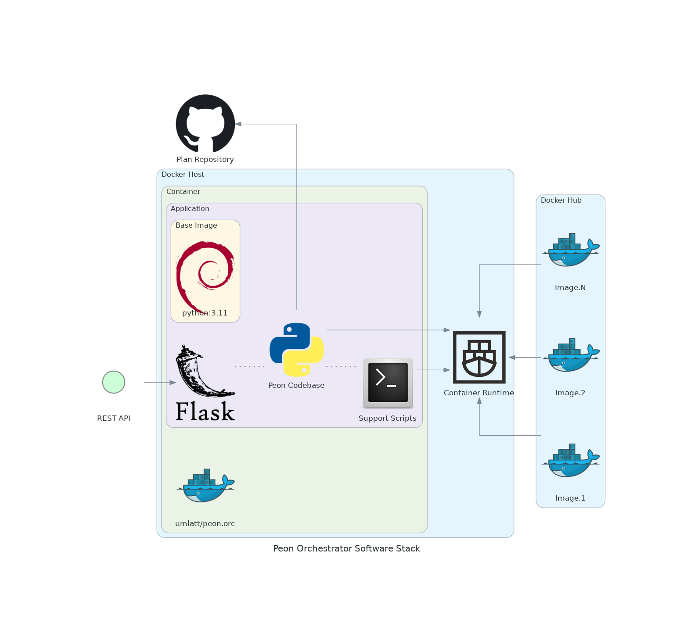

Orchestrator
The Orc (orchestrator) module is the heart of the project.
It is what manages the process of game server deployment for users.
Design Objectives
- Extremely lightweight.
- REST API managed
- Deploy/control game containers.
- Abstracted from the game server/container platform to allow stack evolution.
Software Stack Diagram
*This may change as technologies & skills evolve.

Dev Notes
Navigation
Links to various project-related resources.


Features
- User file backups
- Update to new deployment architecture.
- RESTapi (v1) - Plan/recipies
- Security - api-key integration
- Start/Stop scheduler
- RESTapi (v1) - custom configurations
- Server deployment (v2) - custom configurations
- Persistent server data - Keep server data for updates & future releases.
- RESTapi (v1)
- Server deployment (v1)
Roadmap
Here are some planned features
- Security - Add
fail2banto REST API - Security - Users & Audit Logging
- RESTapi (v1) - Console
Release Notes
1.2.10
- ADDED
 Ability to import any game servers
Ability to import any game servers
1.2.9
- ADDED Added backup save to
/home/peon/backup - ADDED Ability to download user and config data for a game server (via
/home/peon/backup).
1.2.8
- BUGFIX
 Enforced UID 1000 on all folders in the server directory (on create and on docker-compose action)
Enforced UID 1000 on all folders in the server directory (on create and on docker-compose action)
1.2.7
- ADDED Ability to update the game server using the API.
1.2.6
- LOGGING
 Improve logging response to handle bad JSON/missing files on plan load.
Improve logging response to handle bad JSON/missing files on plan load.
1.2.5
- BUGFIX Repaired an issue with a plan not seeing a description
1.2.4
- CHANGED
 Updated how the cli tool references files inside the container
Updated how the cli tool references files inside the container
1.2.3
- BUGFIX Make better alert when the folder already exists, not
action not supported
1.2.2
- ADDED Ability to make custom REST API key through env vars.
1.2.1
- ADDED Added
skipflag toServer PUTto force bypass of actions (if required) - BUGFIX Added return on successful create when not start is requested.
1.2.0
 IMPACT RELEASE
IMPACT RELEASE
- CHANGED Changed URL path from
/api/1.0to/api/v1 - CHANGED Added sort to
get_plans
1.1.0
IMPACT RELEASE
- CHANGED Moved logging into container logs
- ADDED Added
DEV_MODEflag to enable/disable logging/dev mode.
1.0.5
- BUGFIX Fixed API destroy + eradicate of a server.
1.0.4
- ADDED Check if the environment variable
HOST_DIRis empty. - ADDED Added a clean on failure when a server creation is triggered.
- ADDED Added an API flag
nocleanto disable clean on failure. - BUGFIX Fixed issue where failures on
docker composecommands did not get handled by API correctly. - BUGFIX Fixed an issue where generic failure was being reported back via API when plans were being generated.
- LOGGING Added additional step logging for debug logging to assist in fault finding.
1.0.3
- BUGFIX Updated API for use with Discord bot.
1.0.2
- CHANGE Re-enabled stop scheduler.
- REMOVED
 Disabled flask debug mode (as it causes issues with the scheduler)
Disabled flask debug mode (as it causes issues with the scheduler)
1.0.1
- BUGFIX Removed
docker-compose createfrom API when no start is selected. - BUGFIX Updated to
docker composefromdocker-composeparadigm
IMPACT RELEASE
1.0.0
- CHANGE Plans - Reworked entire plans module for docker-compose architecture
- CHANGE Servers - Reworked entire servers module for docker-compose architecture
- CHANGE API - Updated API for docker-compose architecture.
- BUGFIX All - fixed several issues after rework
- ADDED warcamp - cleanup
- ADDED get_warcamp - check container state and update state accordingly.
- CHANGE
CURRENT_TASKAPI - Deploy server from API call. (Untestedserver createfunction) - ADDED API - Plan - Get required settings
- CHANGE Change to SVN download for directory (plans)
- CHANGE Moved to
docker composebased model for better re-usability/clarity. - CHANGE API - Removed servers/server marshall flow for more versatile response handling
- BUGFIX API - Plans - Fixed the get and update from server plans
0.3.2
- ADDED Added
/app/binto the path and addedpeoncli module into orc. - CHANGE Make API key configurable
0.3.1
- CHANGE Rework Orchestrator app to leverage the
docker.sock - CHANGE Moving to init script
init/peon.orc, for pre-flight checks. - REMOVED Removed SSH check on boot from
python3 main.py - ADDED Configurable docker socket path.
- ADDED Added
VERSIONenvironment variable into the container.
0.3.0
- CHANGE Change the docker file to support using
docker.socksocket file to manage docker (from SSH)
0.2.17
- BUGFIX Remove schedule on manual stop
- CHANGE Validate epoch time input for scheduler epoch time
0.2.16
- BUGFIX Server create returned false error due to change error dict handler
0.2.15
- BUGFIX Scheduler vs Start/Stop
0.2.14
- BUGFIX Scheduler v1.0 - Bugfix (server stop is now properly scheduled)
0.2.13
- ADDED Scheduler - v1.0 - Added simple start & delayed stop in scheduler
0.2.12
- CHANGE API Response - Server config
0.2.11
- ADDED PUBLIC_IP - added to container variables
0.2.10
- Logging - Added devMode switch
0.2.9
- ADDED UI - Added MOTD to container login
0.2.8
- CHANGE Base images were pulled to get the latest versions & app was rebuilt on those
- BUGFIX Incorrect parameter reference in server create
0.2.7
- SECURITY
 Inital CORS implementation
Inital CORS implementation - SECURITY Initial api-key requirement implementation
0.2.6
- ADDED API - Server - Destroy & Eradicate
0.2.5
- ADDED API - Server - Reworked to include actions into the path
- ADDED API - Server - Added get with metrics
0.2.4
- ADDED API - Server Get - reworked to provide both container & server state
0.2.3
- ADDED API - Auto download latest plan version when the server is deployed
0.2.2
- ADDED API - Plans get list & update from Peon project list
0.2.1
- BUGFIX Enforced description & settings on [post]servers
0.2.0
- ADDED Added custom config handler
- CHANGE Allows configuration of environment variables in the container (via API)
- ADDED Can supply json/txt files via API
- ADDED Added persistent description
0.1.6
- ADDED Added handler for
configfolder - ADDED Moved game server logs into the game server directory
0.1.5
- INITIALISED
 The first iteration of server create (API)
The first iteration of server create (API)